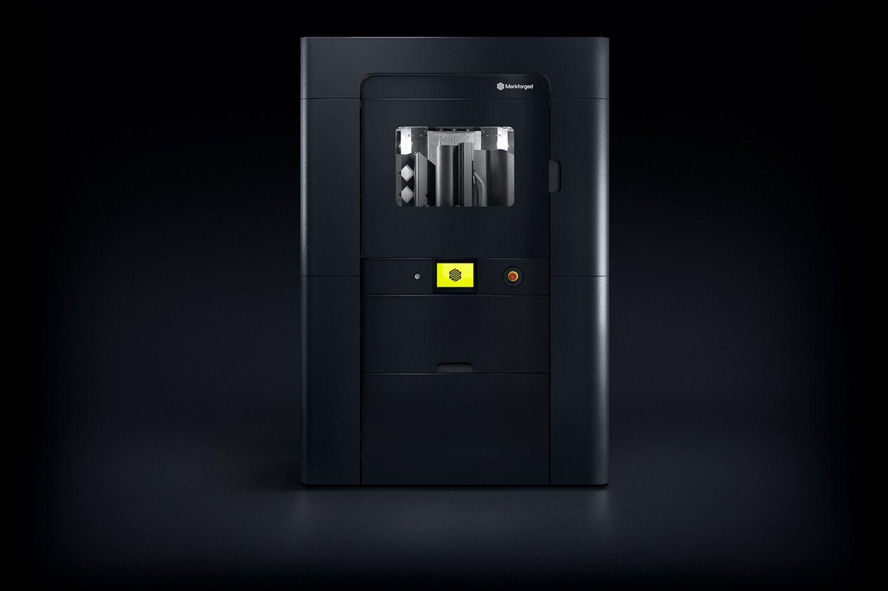
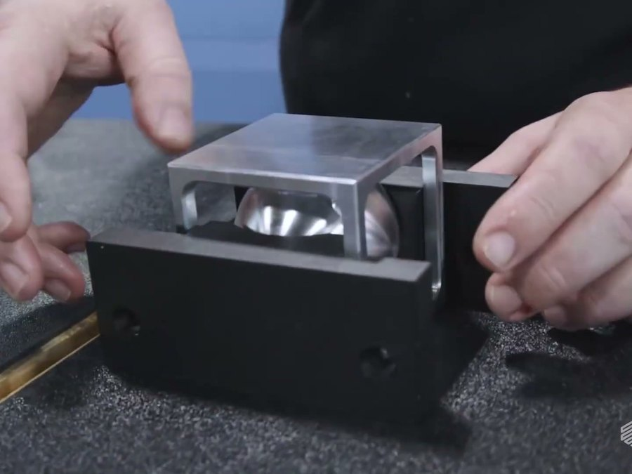
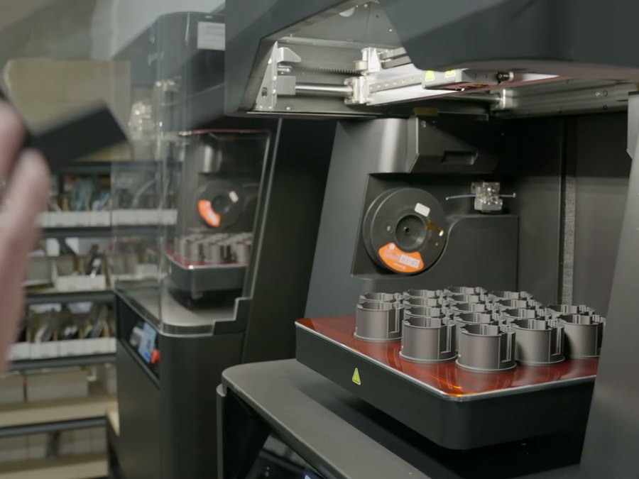
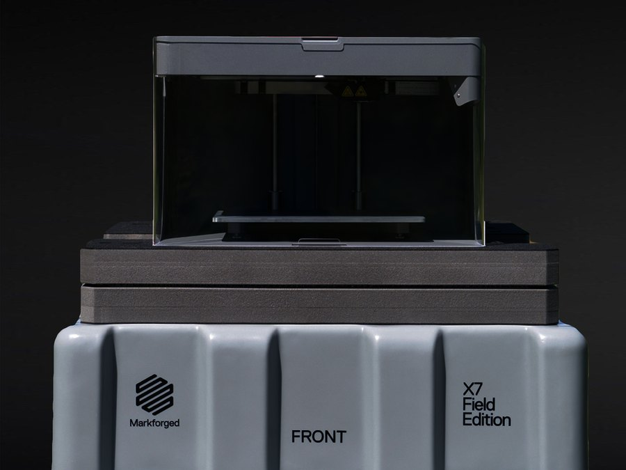
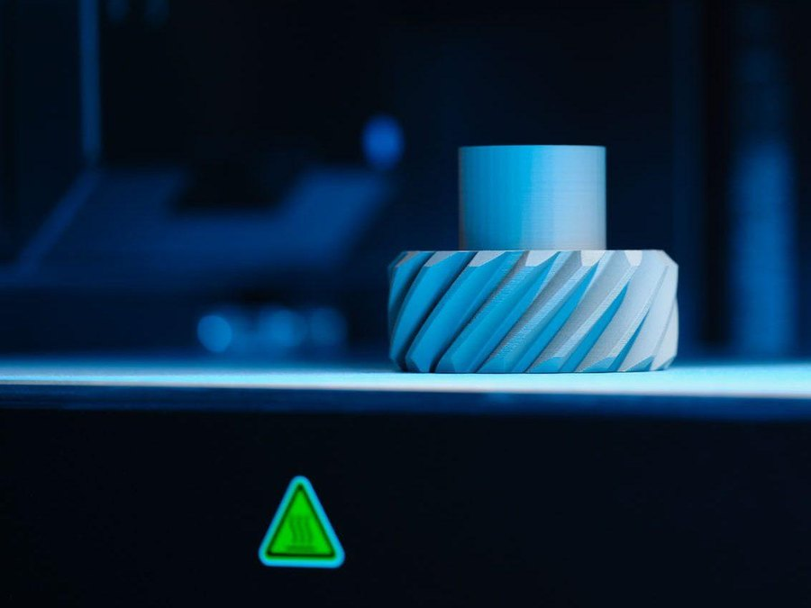

Vietnam's growth is driven by manufacturing. In the first nine months of 2026, disbursed foreign investment reached US$21.07 billion, the highest for the period in five years, with 82.6% (US$17.4 billion) going into manufacturing and processing. Registered foreign investment over the same period reached US$50.36 billion, up 76.4%, a sign that many more plants will open in the country in the years ahead.
Research firm IMARC puts Vietnam's 3D printing market at US$163.5 million in 2025 and forecasts US$709.6 million by 2034, a compound annual growth rate of 16.83% over 2026–2034. Within it, aerospace 3D printing is forecast to grow from US$18.8 million in 2025 to US$83.9 million in 2034.
What Vietnamese manufacturers want is changing: local production, faster tooling, digital inventory, less downtime and less dependence on imported parts. Electronics, automotive-parts and consumer-goods plants keep expanding, and every new line adds demand for fixtures, tooling and spare parts that until now have mostly been machined by outside shops or imported, with lead times measured in weeks.
Additive manufacturing lets these parts be made inside the plant, where they are needed. A design file replaces physical inventory, and a part that used to wait on an outside shop or a shipment is printed the same day and fitted on the spot.
Vietnam's Law on National Defence and Security Industry and Industrial Mobilisation took effect on 1 July 2025, bringing private companies into the defence industry for the first time. The US Department of Commerce's guide to Vietnam's defence sector notes that the country is reducing reliance on a single supplier of defence equipment, strengthening its domestic defence industrial base, and is interested in co-assembly and co-production.
What most often holds defence units back is not buying new equipment but keeping existing equipment running: parts go out of production, minimum order quantities far exceed need, and replacements from abroad take weeks. Markforged continuous-fibre composite and metal parts let units and factories make obsolete spares, tooling and gauges on site, and the X7 Field Edition can be taken out of the factory to where it is needed. The unmanned-systems industry likewise needs structural and functional parts where strength-to-weight drives the design and supply has to be local and dependable.
Markforged's objective in Vietnam is production use. Fixtures, soft jaws and robot grippers that factories now outsource to CNC shops can be printed in-house the same day, and the spare part a stopped line is waiting for can be made where it is needed. Markforged's continuous fiber reinforcement gives printed parts the strength to replace some machined metal parts.
The first systems cover three needs: the FX20 for large composite parts; the FX10, which with the Metal Kit produces both composite and metal parts on one platform; and the X7 Field Edition, which can be taken out of the factory to make parts where they are needed.


The centres in Hanoi and Ho Chi Minh City are not showrooms. They are working sites where customers bring their own parts and have them printed and evaluated on the systems. Installation, training and after-sales service are delivered by teams in Vietnam rather than flown in for each visit.
TwoWay will build the authorised reseller network in Vietnam and provide quotations, supply and technical support to local resellers, so that factories across the country can get systems, materials and service close to home.
The certificate is issued by Markforged, Inc. as an act of the company and sets out four areas of authority for TwoWay as Master Distributor:
The authorised products are the Markforged industrial 3D printing line — FX10, FX20, X7, X7 Field Edition and the FX10 with Metal Kit for metal parts — together with Markforged materials and Digital Forge software and services. Brian Chen, Country Manager for Greater China and Vietnam, is the Markforged representative responsible for the territory.
Vietnam is a priority growth market for Markforged in Greater China and Vietnam. 2026 is an investment year for Markforged in the country: the focus is on building the channel, the application centres and local service, not on short-term revenue — which is also why Markforged is selective about the partners it builds with.
With a Master Distributor in country, the Markforged systems already running in Vietnam, and the new plants that international manufacturers are opening there, can get systems, materials, training and technical support close at hand, extending the same Markforged manufacturing platform to Vietnamese production lines.
Markforged sets clear operating requirements for its partners in Vietnam, and reviews them regularly: sales, technical service and marketing teams resident in the country, application centres in operation in the north and the south, and certified application and service engineers able to install, maintain and train customers on the equipment.
TwoWay is Markforged's Diamond Partner in Taiwan and is itself a developer and manufacturer of RF and optical transmission equipment, familiar with what manufacturers demand on lead time and quality. The appointment extends the partnership from Taiwan to Vietnam, with TwoWay building the local team, application centres and reseller network as Markforged's long-term operating partner in the country.


Markforged is an industrial additive manufacturing company founded in 2013. Through the Digital Forge platform and Continuous Fiber Reinforcement (CFR), manufacturers produce high-strength end-use parts, tooling and spares at the point of production, shortening supply chains, reducing inventory and improving capacity resilience. Its product line covers industrial composite and metal additive manufacturing systems, used in aerospace, automotive, electronics, medical devices and precision engineering.
TwoWay Group Co., Ltd. was founded in 1992 and is headquartered in New Taipei City. It listed on the Taiwan Stock Exchange in 2024 (stock code 8045). The group runs two business units, broadband networks and AIoT, and has more than thirty years in cable television and communications, developing and manufacturing RF and optical transmission equipment. TwoWay is a Markforged Diamond Partner covering Taiwan and Vietnam.
Sylvia D'Souza, Marketing Manager, APAC
Email: sylvia.dsouza@markforged.com
To buy Markforged products in Vietnam, to discuss becoming an authorised reseller, or for training and technical support, contact TwoWay.
Visit TwoWay